Activity Assigning the terminal
In this activity, you name components and assign terminals to a part model.
Click here to download the activity file.
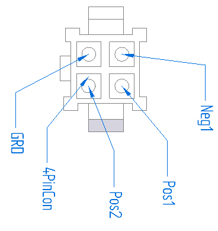
Open the 4PinConnector.par part file.
Click the Tools → Assistants → Assign Terminals button
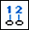
.On the Assign Terminals dialog box, in the Component name (Library part name) box, type 4PinCon, and then press Enter.
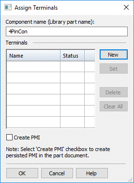
You can use the Assign Terminals dialog box to assign all component names. The component name is displayed, identifying the component.
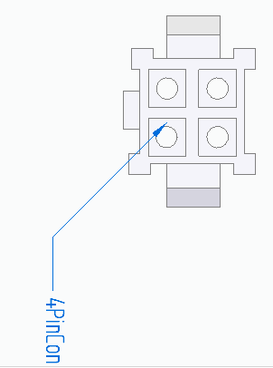
Click New .
In the Name box, type Pos1, as shown in the illustration, and then press Enter.
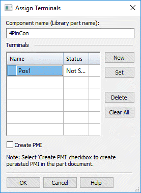
The Status value for Pos1 is Not Set. This is because you have not selected a terminal for assignment.
Click Set and then click the highlighted circle, shown next.
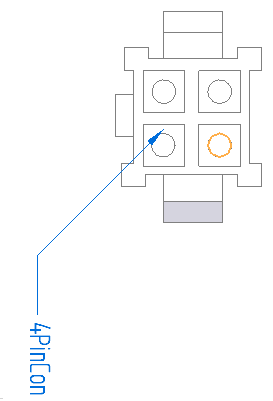
The Status value for Pos1 on the Assign Terminals dialog box is now Set and the Pos1 balloon is attached to the terminal you selected.
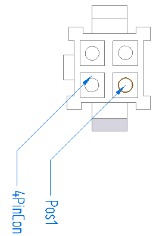
On the Assign Terminals dialog box, click New .
In the Name box, type Neg1, as shown in the illustration, and then press Enter.
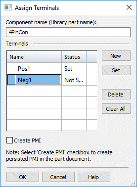
On the Assign Terminals dialog box, click Set and then click the highlighted circle, shown next.
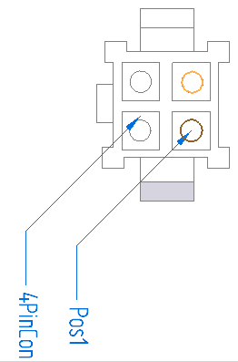
The Neg1 balloon is attached to the terminal you selected.
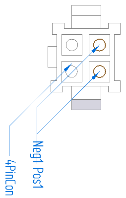
Repeat steps 1 - 3 to assign to assign GRD to the specified circle.
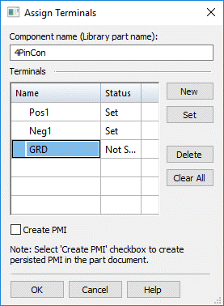
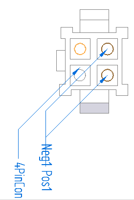
The GRD balloon is attached to the terminal that you selected.
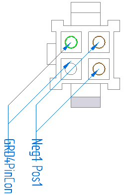
Repeat steps 1 - 3 to assign Pos2 to the specified circle.
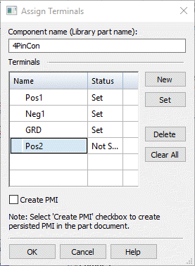
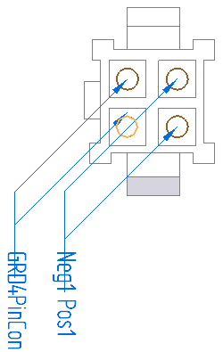
The Pos2 balloon is attached to the terminal that you selected.
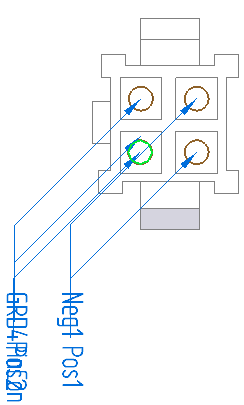
Click the Create PMI check box to display the PMI in the part document.
Click OK.
After you finish making the assignments, you can drag the handles on the balloons to get a better view of the terminal assignments.
On the Quick Access toolbar, click the Save button to save the document  .
.
Close the part.